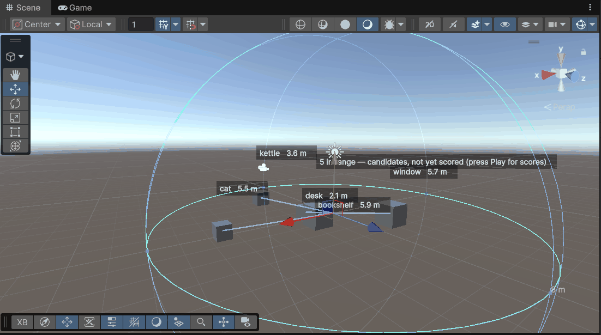

Points of interest
Make an object noticeable: add AI Point Of Interest to it. That is the whole setup.

Select a character and the radius is a handle you can drag. Everything inside it is a candidate; what reaches the prompt is the highest-priority handful, recomputed per turn.
The scene view answers two different questions depending on whether the game is running:
- Not running — every point of interest inside the radius, named, with its distance. These are candidates and they are deliberately not scored: distance is knowable while you are placing furniture, line of sight and priority are not, and a number invented in edit mode would be a guess wearing the clothes of a measurement.
- Playing — the objects actually in context, each with the score that put it there, the line thicker for the ones in view. This is the answer to "why is she talking about the bookshelf and not the bed".
There is no list to register it in, no manager to tell. The component adds itself to a static registry while it is enabled and removes itself when it is disabled or destroyed, so object pooling, additive scene loads and scene unloads are already correct.
The object
| Field | What it does |
|---|---|
id | What the model writes to name it. Short, unique, obvious. Derived from the object name if left empty. |
description | What it is, per language. |
priority | Higher is more worth mentioning. 0 is ordinary scenery. |
affordances | Verb ids this object accepts. Empty means all of them. |
states | Authored states selected at runtime: poi.SetState("open"). |
On Npc Interact | UnityEvent raised when an NPC acts on it — inspector wiring, no code. |
Ids matter more than they look. The model picks a target by writing its id, so two objects called chair means it cannot reliably mean either. Duplicates and over-long ids are warned about in OnValidate.
A point of interest is also an action target. It implements IActionTarget and IAimTarget, so a verb can be aimed at it without adding an Action Target component as well — see Actions. The reverse does not hold: an Action Target is addressable but not perceived, so the character can be told to act on it and will never mention it unprompted.
The character
Add Perception Query to the NPC.
score = w·proximity + w·priority + w·facing + w·recency-of-interaction
Weights are serialized data. Two rules are not negotiable:
- Occlusion excludes. Something behind a wall is not low-scoring, it is absent. A character remarking on an object she cannot see reads as broken no matter how the weights are tuned.
- Only the top N reach the prompt (default 6, hard cap 15). Small models degrade quickly once a prompt turns into a list, so this is a quality control.
Facing is soft by contrast — something behind her is less salient, not invisible, because she can turn her head.
How it reaches the model
The result of one recompute produces two things at once:
Nearby: a mug of cocoa (still warm) [mug], the record player (playing) [record_player].
…and the target enum of the action grammar, built from that same list. So the character is physically unable to name an object it cannot currently see, and what it is told about can never disagree with what it may refer to.
The block rides with the turn and is never written to the conversation transcript: it describes one moment, and a transcript would repeat it later as though it were still true.
Receiving an interaction
public class Kettle : MonoBehaviour
{
private void OnNpcInteract(NpcActionContext ctx) // wired on the POI in the inspector
{
Debug.Log($"{ctx.SpeakerId} did {ctx.Verb} to {ctx.Poi.Id}");
}
}If the object vanished between generation and dispatch, nothing is raised and nothing throws.
Making a whole scene visible
PoiBulkAttach.AttachToLayer("Props"); // or AttachToTag("Interactable")Idempotent, and ids are de-duplicated automatically.
Debugging
- Select the NPC: the perception radius and lines to everything currently in context.
perception.Explain(poi)answers "why did she not mention the mug?" with the actual reason — too far, behind which object, or simply outranked.